In a valley where every clock has stopped, one bell tower still keeps time. You are its keeper.
The old workshops of the valley fell silent long ago, and the wind-ups they made ran down where they stood. Now the Rust has got into their springs and they are waking, one by one, to walk the cobbled roads towards the only thing still ticking. They are not wicked. They are broken, and the sound of the bell draws them in.
The Last Bell is a tower-defence game for your phone, painted in dusk blues and lantern gold. You build towers on stone pads beside the roads, stop each wave of wind-ups before they reach the bell, and mend every one you stop. The Rust falls away and the parts are yours to spend. Nothing is destroyed; everything is mended.
The hook: ring the bell backwards
Every tower-defence player knows the moment: a wave you did not plan for slips through and the run is as good as lost. In The Last Bell, you ring the bell backwards. The last 30 seconds are undone, the field pauses, and faint echoes show you exactly where the wind-ups got through. Move a tower, sell one, build a new one, then play the minute again. The wind-ups arrive in the same order, the same way, so what you learned is true, and every replay makes your towers strike a little harder. Read all about it on the Rewind page.
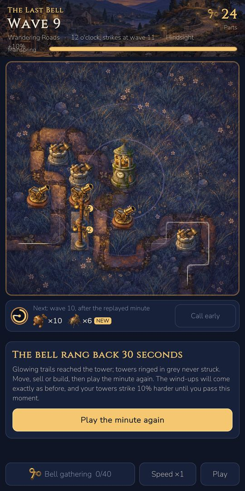
How a run feels
- Build. Tap a glowing pad, pick a tower. Your first Clapper costs just 20 Parts. See How to play.
- Defend. A new wave walks in about every 30 seconds. Mended wind-ups drop Parts, which you spend on more towers and on raising the ones you have.
- Rewind when it matters. You start each run with one rewind charge, so choose your moment.
- Recast. When the bell's mainspring finally runs down, melt the run into Bell-metal and spend it in the Foundry so the next run goes further.
Runs last a short while at first and stretch as you grow. The clock face on the bell tower moves one hour every ten waves, and at each hour a Warden arrives. At midnight, the Toll itself comes. See The clock face.
What is in the valley
- Dozens of towers in seven rarities, from the humble Clapper to towers painted as Tamsin Hale's own designs. Each tower chooses one of two final forms when fully upgraded.
- Clockwork wind-ups: Tickers, Scuttlers, armoured Platebacks, paper-winged Gliders, bolt-throwing Spinners, and more, each with one obvious counter.
- Valleys to defend: the ever-changing Wandering Roads, nine hand-made valleys, and the Open Field where you build your own maze.
- Trials, a Daily Valley and a fortnightly Peal if you want a challenge.
- Research and time away: the tower holds while you are gone, so you never come back to a lost run.
The valley and the moth
The bell tower once belonged to Tamsin Hale, bell-founder, who kept it ringing alone for years and left her notebook in the belfry. It is from her notebook that you learn the bell can ring backwards. The story arrives in short pages as you reach milestones; see The story (spoilers).
And in the belfry lives a small lantern moth. It drifts about the field and settles near one tower at a time, whose strikes then land truer. When you ring the bell back, the moth is the one thing that does not go back; it stays where it was, as if it remembers. Meet it on The lantern moth.
Tip New here? Read How to play, then Your first hour. Stuck on a wave? Try Tips for deep waves and the FAQ.
Start here
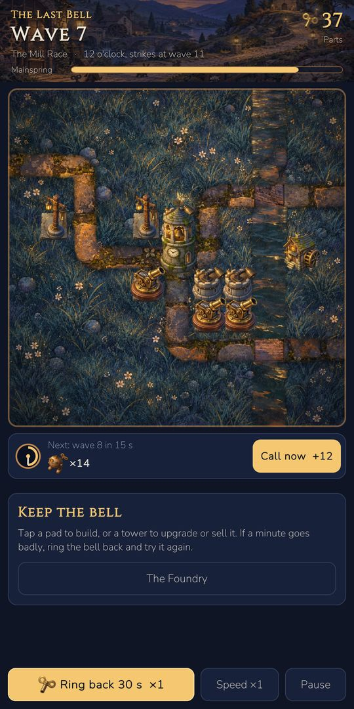
How to play
The whole loop of The Last Bell in one page: build, defend, rewind, recast, improve.
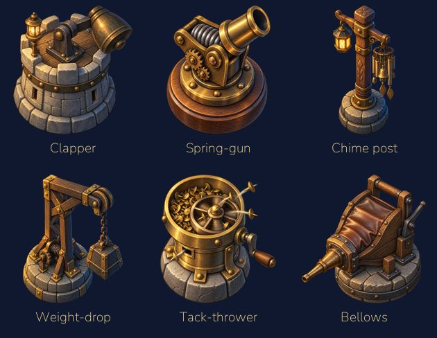
Your first hour
What to build, what to expect and what unlocks during your first runs of The Last Bell.
Systems
Rewind the minute
How the bell rings backwards: the 30-second window, echoes, Hindsight, charges and the bell that rewinds itself.
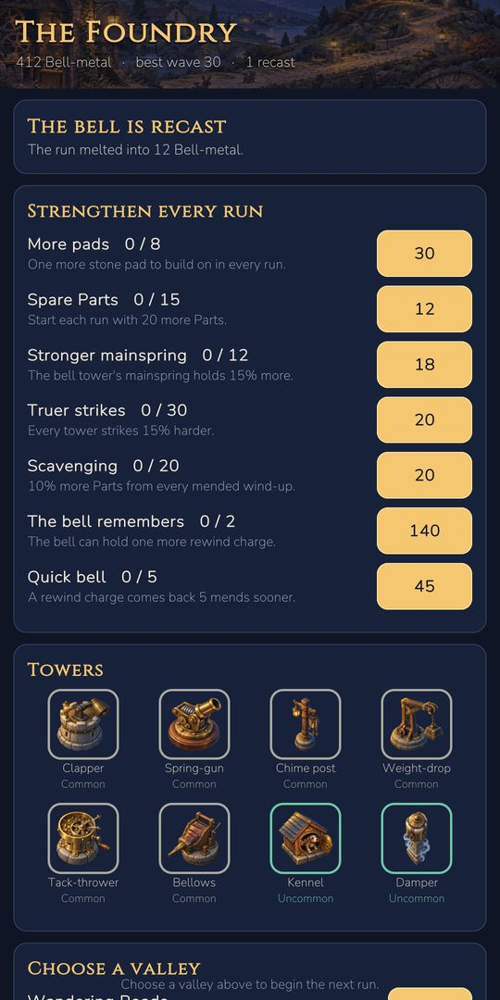
Recast, the Foundry and stars
How a run turns into Bell-metal and how to spend it on permanent upgrades and tower stars.
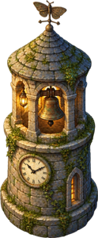
Research and time away
Six research projects that keep working while the game is closed, and what the bell gathers while you are away.
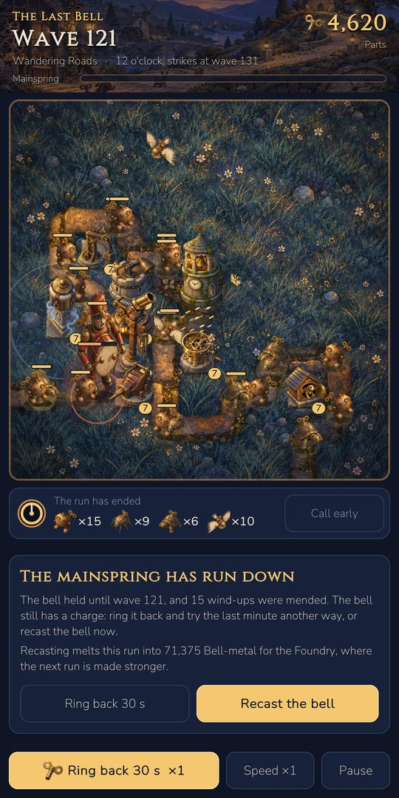
The clock face
How the bell tower's clock marks a run: an hour every ten waves, a Warden at each hour and the Toll at midnight.
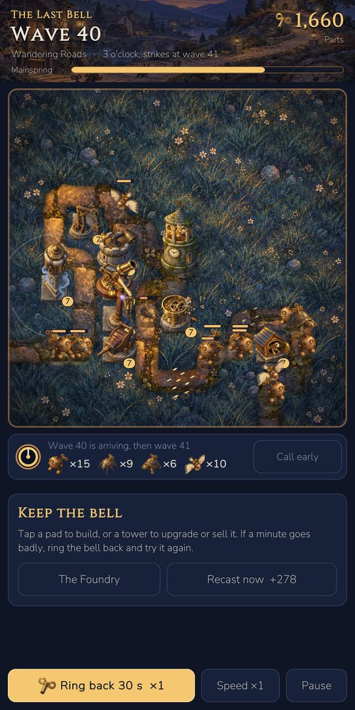
TrialsSpoilers
Challenge runs under harder rules, with goal waves, three stars each and early unlocks for epic towers.
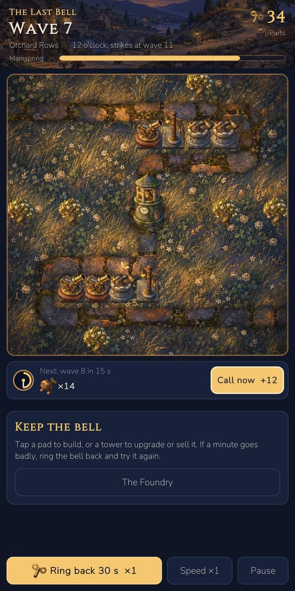
Daily Valley, the Peal and leaderboards
The seeded Daily Valley, the fortnightly Peal competition and the Google Play Games boards.
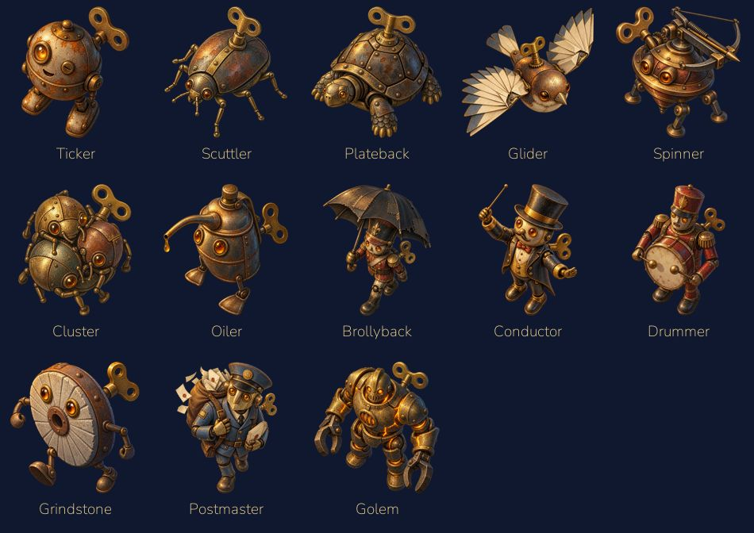
Crew and the Roll
How mended wind-ups sometimes wake and join your defence, and how the Roll remembers them.
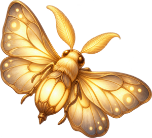
The lantern moth
The small glowing moth of the belfry, who settles by one tower at a time and remembers when the bell rings back.
Towers
Towers at a glance
How towers, rarities, families, limits, levels, stars and final forms fit together in The Last Bell.
Common towers
The six common towers of The Last Bell: what each does, what it costs, its final forms and what it pairs with.
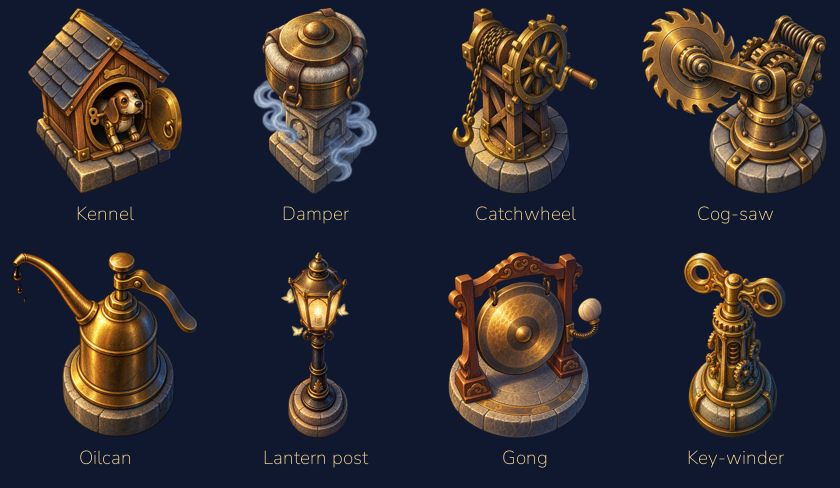
Uncommon towers
Eight uncommon towers that slow, hold, hook, oil, speed up and ring out, with their costs, unlock waves and final forms.

Rare towers
Seven rare towers, from the Escapement to the Mender's post: what they do, costs, unlock waves and final forms.

Epic towersSpoilers
The six epic towers that open after the first Toll: pendulums, planets, cranes, tuning forks, sand and a vane for fliers.
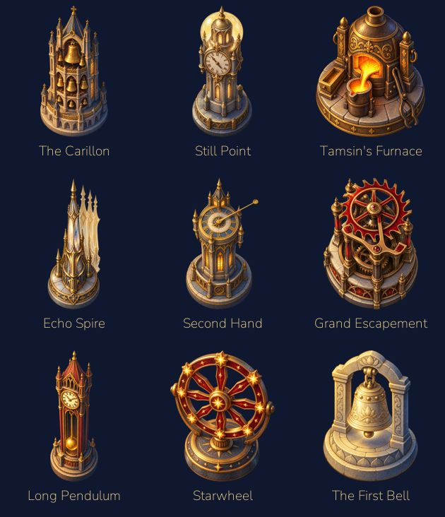
Legendary, Mythic and Exalted towersSpoilers
Tamsin Hale's own designs and the crown of the collection: the Carillon, the Still Point, the Furnace and beyond.
Tower pairings
Which towers work well together in The Last Bell, and the rules behind each combination.
Enemies
The wind-ups
Every kind of clockwork wind-up in The Last Bell, when it first appears, how it behaves and what beats it.
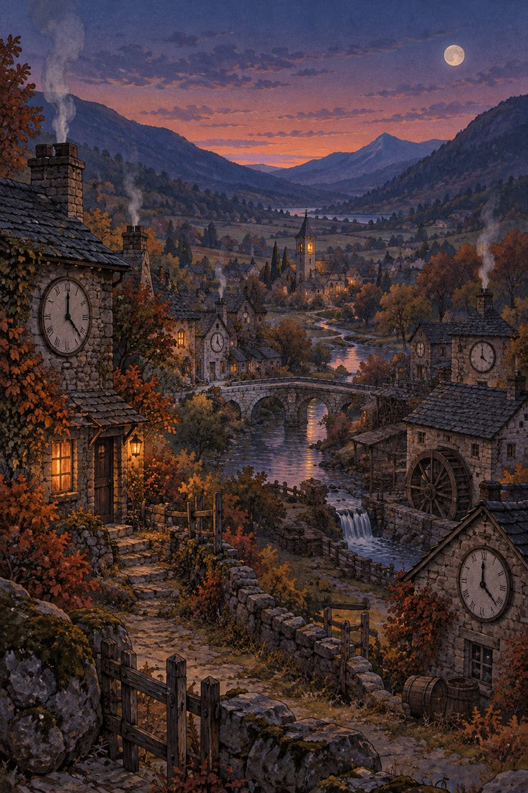
Wardens and TollsSpoilers
The mini-bosses that strike each hour and the four great Tolls at midnight, with their tricks and how to stop them.
Maps
The valleys
Wandering Roads, nine hand-made valleys and the Open Field: how each is unlocked and what makes it different.
Hand-made valleys
A guide to each of the nine hand-made valleys of The Last Bell and how to play them.
The Open Field
The maze mode: no roads, cheap stone walls, and a gate that wind-ups must find their way through.
Twists and the monthly valley
Every twist that can change a valley, and how the monthly valley rotates.
Reference
Tips for deep wavesSpoilers
Habits and layouts that carry a keeper from the first Warden to the late Tolls and beyond.
The storySpoilers
Tamsin Hale's notebook, the valley's workshops and the pages that unlock as you stop each Toll.
Frequently asked questions
Quick answers about rewinding, recasting, unlocks, time away, Trials and more in The Last Bell.
Glossary
The words of the valley, from Bell-metal and Hindsight to the Toll and the Roll.
From the same world
Where the valley of stopped clocks sits in the BlairsLab world, and how the other games touch it.